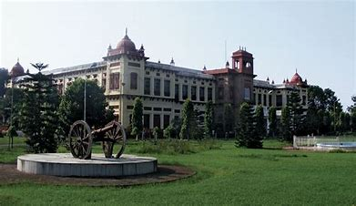

Patna is in addition one of the oldest ad infinitum colonized places on planet earth. According to reports and studies, Patna was referred an estimate of 2500 years ago in Buddhist sculptures. By surpassing the previous record-holder, Beijing in China, Patna's WiFi zone is the world's longest free WiFi zone, which covers a 20-km stretch from NIT Patna on Ashok Rajpath to Danapur. Lying along the banks of the sacred river Ganga, Patna is one of the oldest cities of India. The capital city of Bihar, Patna is famous for its glorious past and the historical edifices.
